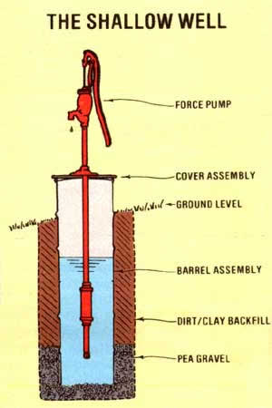
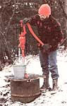
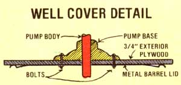

You may be able to augment your home or farmstead's water supply for very little cost!
Al Adams
Phot By Hilary Adams
Illustrations By The Author
A year ago-after spending the summer building our house and bringing in a winter's worth of firewood-my wife and I were faced with the question of how to take care of our new homestead's water needs. Unfortunately, we couldn't afford the $400 necessary to hire a local contractor to backhoe a hole and install concrete spring tile. So we were about resigned to carrying water from our nearest neighbor's supply during the coming cold season ...until I decided to take the bull by the horns and design a do-it-myself shallow well.
To begin the project, I dug a three-foot-square hole at a point where a natural spring ("seep" might be a more accurate term) was located. I was careful to position my pit back from, and a bit above, a nearby marshy area. (Ideally, a well hole should be dug in late summer, when the water table is at its lowest. At that season you'll need to bail less while digging ...and you can be reasonably sure of an adequate flow of water during the wetter parts of the year.) I was relieved to hit bedrock at a depth of 5-1/2 feet, since I would have had difficulty excavating deeper with hand tools.
Once the pick-and-shovel work was behind me, I obtained two 55-gallon drums (they had formerly held glue) with locking ring-sealed removable lids. A friend kindly volunteered the use of his oxyacetylene torch, and before long the bottoms of the two barrels were removed and I'd brazed the cylinders together end to end ...producing a sturdy steel tube about two feet in diameter and six feet long. /EDITOR'S NOTE: Torching used barrels, which could contain flammable fumes, should be done outdoors and with the greatest caution!/
In order to clean the paint and adhesive from the barrels, I built a scrapwood fire and placed the reservoir-to-be, on end, over the blaze, with its base propped up on rocks to allow air to reach the fire. Much to my surprise, a column of yellow flame was soon shooting some 15 feet into the air, accompanied by the earthquake-like rumble of a very violent draft. Within an hour the paint had been vaporized by the intense heat and after waiting for the metal to cool-I wire-brushed the remaining residue from the metal and rolled the assembly down to the hole.
Of course, before I could install my homemade spring tile, I had to set up a system to filter the water that would flow into it. Therefore, I shoveled a six-inch deep layer of washed pea gravel into the bottom of the hole. The double barrel was set on top that stone, and another foot of gravel was poured around the outside of the lower drum, to provide further cleansing. I then filled in around the cylinder with clay-heavy earth to help prevent surface water from seeping into the well.
My next project was to put together a mount for the hand pump to be used with my water supply. I simply bored holes in one of the leftover drum covers, to match the mounting hardware on the pump's base, then cut a 2' X 2' square of 3/4" exterior grade plywood and bored openings in it to match those in the lid. By sandwiching the wood between the pump and the barrel lid, I was able to produce a sturdy assembly. I finished this step by applying silicone caulking around all of the fasteners, for further protection against ground-water seepage.
After fishing a few floating leaves out of the water, I lowered the pump and cover unit into place. Then I fitted a length of 3/4" hose to the outlet on my pump (to avoid having spilled water ac cumulate above my well) and began the job of emptying out the somewhat murky liquid. There was a fair amount of silt being carried in as the reservoir refilled itself, and I had to pump out the well three times to remove all traces of mud.
I also decided to chlorinate the water, to kill any bacteria that might have been introduced during the construction process. To do so, I mixed one quart of household bleach with an equal amount of water, making a solution capable of purifying 100 gallons of drinking liquid. The mixture was then dumped into the well and the system resealed with its locking ring and silicone caulk. I pumped until a strong smell of chlorine was evident at the hose outlet, then let the purifying chemical do its work overnight. On the following morning, I pumped the well out a few more times to remove all detectable traces of bleach ...and my low-cost shallow well was ready for use!
EDITOR'S NOTE: Anyone duplicating Mr. Adams's well might want to consider using only barrels of heavy plastic or otherwise --that are approved for food storage. The author reports that his metal drums did eventually introduce some rust into the water, which forced him to install a filter. In addition, it's best to have any new supply of water tested far purity if it's to be used by humans, and to install a locking assembly on the lid to prevent curious children from opening the well and, perhaps, falling in.
|
 |
 |
 |